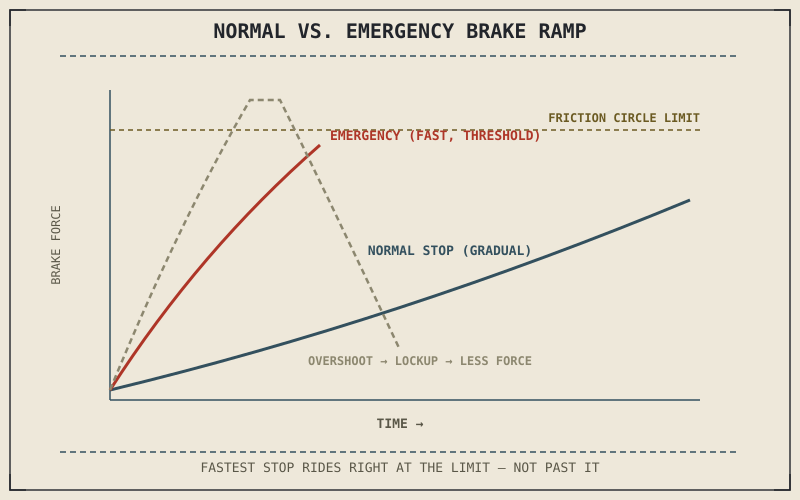

Chapter 9.3 described a normal stop as smoothly tracking weight transfer as it develops. An emergency stop doesn't have time for that development to unfold gradually — the whole sequence Chapter 7.5 described happening over a second or two in a normal stop needs to happen in a fraction of that time, and the rider needs to get right to the edge of the friction circle almost immediately rather than easing toward it.
Chapter 9.3 closed by naming emergency and threshold braking as this chapter's subject. This chapter covers the specific technique.
Getting to Maximum Grip Quickly, Not Instantly
Even in an emergency, Chapter 7.5's weight transfer still takes a brief but real amount of time to develop — grabbing the maximum available front brake force in the first instant, before any weight has shifted forward, still risks exceeding the front tyre's currently available grip and locking the wheel, exactly the failure Chapter 7.1 first described. Effective emergency braking applies firm, hard pressure very quickly, but still as a rapid ramp rather than an instantaneous full-force grab, front brake first and heaviest, both brakes together, letting weight transfer catch up within a fraction of a second before continuing to squeeze toward the front tyre's actual limit.
Threshold Braking: Riding the Edge of the Friction Circle
Threshold braking means applying brake force right up to the edge of the friction circle Chapter 6.4 and Chapter 8.2 described, without crossing into the kinetic-friction slide that follows if that edge is exceeded — maximum deceleration is achieved not by applying maximum possible lever force, but by applying exactly as much as the tyre's current static friction limit allows, no more. This is a genuinely difficult skill because that limit is invisible and constantly shifting with the same weight transfer and surface conditions this book has described throughout, which is exactly why ABS from Chapter 7.7 exists as a backstop for riders who cross that invisible edge under the pressure of an actual emergency.
Maximum stopping power isn't maximum lever force — it's exactly the amount of force that sits right at the edge of the tyre's friction circle without crossing it, a target that's invisible and constantly shifting, which is precisely why ABS exists as backup for the moments a rider misjudges it.

A graph comparing a normal stop's gradual brake pressure ramp against an emergency stop's much steeper, faster ramp, both approaching but staying just under the friction circle's limit, with a locked-wheel line shown for a stop that overshoots it.
Why Practice Matters More Here Than Anywhere Else in This Part
Because threshold braking asks a rider to sense an invisible, shifting limit under time pressure, it's a skill that degrades badly without deliberate practice, and improves noticeably with it — a rider who has never intentionally practiced a hard stop in a controlled setting is, in effect, attempting threshold braking for the first time during the actual emergency where accuracy matters most. Practicing emergency stops in a safe, empty area, gradually approaching the friction circle's edge and learning to recognize the earliest signs of an approaching lockup, builds the same feel Chapter 9.3 described for normal stops, just compressed into a much smaller window of time and much closer to the actual limit.
A Common Misconception, Cleared Up Early
It's a common instinct to think an emergency calls for grabbing the brakes as hard and as fast as physically possible, treating maximum lever force as equivalent to maximum stopping power. Chapter 8.2's static-versus-kinetic friction distinction says otherwise: force applied beyond the tyre's static friction limit doesn't produce more deceleration, it produces a slide and less deceleration than a well-judged stop just under that limit. The instinct to grab hardest is understandable under genuine threat, but it's mechanically counterproductive exactly when it matters most, which is why deliberate practice matters as much as it does.
Where This Leads
Emergency braking assumes a straight line. Combining braking with cornering — the trail braking Chapter 8.6 introduced from the physics side — is its own distinct skill with its own timing and feel. Chapter 9.5 first covers cornering lines and vision, setting up the specific trail-braking technique that follows in Chapter 9.6.
Key Concepts to Remember
- Even an emergency stop needs a rapid ramp rather than an instantaneous full-force grab, since weight transfer still takes a brief but real amount of time to develop.
- Threshold braking means applying force right up to the invisible, constantly shifting edge of the friction circle, not simply applying maximum lever force.
- Force beyond the tyre's static friction limit produces a slide and less deceleration, not more, which is why deliberate practice at sensing that limit matters.
Cross-References
| ← Ch. 9.3 | Described normal braking's gradual weight-transfer tracking; this chapter compresses the same physics into an emergency's much shorter timeframe. |
| ← Ch. 8.2 | Established the static-versus-kinetic friction distinction; this chapter shows why exceeding static friction produces less, not more, stopping force. |
| ← Ch. 7.7 | Explained ABS preventing wheel lockup; this chapter frames ABS as a backstop for the moments threshold braking is misjudged under pressure. |
| → Ch. 9.5 | Covers cornering lines and vision, setting up the trail-braking technique that follows in Chapter 9.6. |